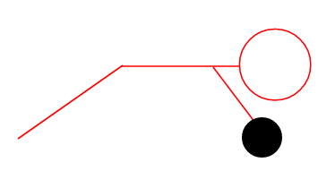

最新體重
89.4 kg
體脂率
24.3 %
骨骼肌
35.3 kg
慈善賽進度
68%
每日時間表
04:30
起床 — 每朝3隻雞蛋+喝咖啡 +Supplements+沖蛋白shake
4:40-4:45am
準備出門 — 檢查水瓶（至少1.5L）、搖搖杯、毛巾、耳機
4:45-7:00am
到達Gym+暖身+跑步機+重訓 — 10分鐘動態暖身：手臂畫圈、腿擺動、髖關節打開、深蹲10次、原地慢跑
7:00-7:25am
伸展 + 回家 — 5分鐘靜態伸展
7:25am-12:00pm
回家/沖涼/上班 — 每小時喝水200-300ml（目標12:00前喝1.5L）
12:00-13:00pm
午餐（Lunch box） — 300g 雜菜 + 200g 蘑菇 + 150g 粟米 + 200g 瘦肉/雞胸/豆腐 + 少量糙米
13:00-6:00pm
繼續工作 — 每小時喝水200ml
6:00-7:00pm
回家/沖涼/休息 — 熱水澡放鬆肌肉 + 補水（全日目標3-4L）
7:00-7:30pm
晚餐 — 200g 白飯/糙米 + 250g 清蒸魚 + 300g 生菜/青菜
7:30-7:45pm
Supplements — Biotin 10,000 mcg 1粒 + Omega-3 3粒 + NOW Daily Vits 1粒 + Zinc 30mg 1粒
7:45-8:50pm
放鬆時間 — 避免藍光、輕鬆活動
8:50-9:00pm
睡前Supplements + 準備 — Magnesium Glycinate 400mg（2粒） + CoQ10 200mg 1粒 刷牙、關燈
9:00pm
入睡 — 確保7.5小時優質睡眠
Supplements時間表
| Supplements | 時間 | 劑量 |
|---|---|---|
| Protein | 04:30 | 3 scoops |
| Collagen | 04:30 | 2 scoops |
| Creatine | 04:30 | 5g |
| Vitamin D3 | 04:30 | 1粒 |
| Biotin 生物素 | 隨餐(Dinner) | 1粒 |
| Omega-3 Fish Oil | 隨餐(Dinner) | 3粒 |
| NOW Daily Vits 多維 | 隨餐(Dinner) | 1粒 |
| Zinc Picolinate | 隨餐(Dinner) | 1粒 |
| Magnesium Glycinate | 睡前 | 2粒 |
| CoQ10 200mg | 睡前 | 1粒 |
每週 3 日訓練計劃 （單擊展開）
推薦每週安排（每節訓練後至少休息 1 日）
週一
日 1
日 1
週二
休息
休息
週三
日 2
日 2
週四
休息
休息
週五
日 3
日 3
週六
恢復
恢復
週日
休息
休息
提示：可依個人時間調整，重點保持每週完成 3 節並逐步增加重量。
建議：每動作 3 組 • 8-12 次 • 休息 60-90 秒

1. 上斜啞鈴推胸 (Incline Dumbbell Press)

2. 平板啞鈴推胸 (Flat Dumbbell Press)

3. 下胸繩索飛鳥 (Lower Chest Cable Fly)

4. 繩索三頭下壓 (Tricep Rope Pushdown)

5. 繩索過頭三頭伸展 (Cable Overhead Triceps Extension)

6. 斬木 (Wood Chopper)
建議：每動作 3 組 • 8-12 次 • 休息 60-90 秒

1. 引體向上 (Pull-ups)

2. 坐姿繩索拉背 (Seated Cable Row)

3. 硬拉 (Deadlift)

4. 貝葉斯繩索彎舉 (Bayesian Cable Curls)

5. 牧師椅彎舉 (Preacher Curls)

6. 腹輪 (Ab Wheel Rollout)
建議：每動作 3 組 • 8-12 次 • 休息 60-90 秒

1. 澤奇深蹲 (Zercher Squats)

2. 指力彎舉 (Finger Curls)

3. 反向腕彎舉 (Reverse Forearm Curl)

4. 側舉 (Lateral Raises)

5. 後飛 (Rear Delt Raises)

6. 龍旗 (Dragon Flag)
* 記得每次訓練前做 10 分鐘動態暖身，訓練後做伸展。使用 Workout Log 記錄你的進度。
訓練日誌
快速記錄 • 慈善噸數追蹤
正在從 Google 載入訓練紀錄...
請稍候，數據會安全同步到你的帳號。載入完成後會自動顯示歷史記錄。
如果持續失敗，請檢查網絡或稍後再試。
進行中訓練
繼續今日訓練
訓練量
0
kg
0 組
•
0.00 t
準備好訓練了嗎？
點擊開始新訓練，計時器幫助你在組間適當休息。
近期訓練
單一動作分析
訓練量趨勢 (Volume)
Bar + Line
e1RM 進展曲線
Line + 趨勢線
教練洞見
選擇一個動作後，這裡會顯示基於你的訓練歷史的簡單分析建議。
歷史組數
| 日期 | 重量 | 次數 | Volume | e1RM | 備註 |
|---|
向上捲動查看更多 • 受上方時間範圍限制
目前連續訓練天數
--
天
累計訓練量
--
-- 噸
總訓練次數
--
已記錄 -- 組
個人紀錄
--
已達成 PR 次數
Body Part Volume Distribution (Lifetime)
Recent Volume Trend (Last 8 Weeks)
2026 年 6 月
日
一
二
三
四
五
六
點擊有顏色日子可查看詳情（支援多場合併顯示）。顏色深淺代表相對訓練量。
肌群訓練量（最近30天）
數據儲存在本機 + 盡可能同步到你的帳號。
登入
新增訓練記錄（舊版）
訓練完成！🎉
Training Complete!
總訓練量
組數 / 動作
總計
訓練時長
--
分鐘
個人紀錄與里程碑
每一次訓練都是對慈善的貢獻 💪
歷史記錄 — 查看 / 編輯
總訓練量
0
kg
直接修改下方每組的重量、次數、備註。修改會即時反映在總量上。
修改後會同步更新歷史列表、日曆同本地儲存
偵測到未完成的訓練
只會提示今日內有實際記錄組數的未完成訓練
訓練模板
將目前訓練結構儲存為模板
Workout Sets（訓練組合）
自訂你的快速訓練組合，資料存於後端
Set 名稱（可自訂）
包含的動作（點擊 × 移除）
你嘅自訂 Workout Sets（點擊「編輯」管理，訓練中可直接喺 Bar 點擊固定預設或自訂 Set 載入）
提示：前三個為系統固定預設訓練日（不可修改）。之後係你自己新增嘅自訂 Set，資料只存你自己嘅 Google Sheets。
動作庫
肌肉重點（綠色 highlight）
專家提示（Muscle & Fitness / Athlean-X / Jeff Nippard）
提示：長按 GIF 可暫停（手機優化）
新增自訂動作
主要類別